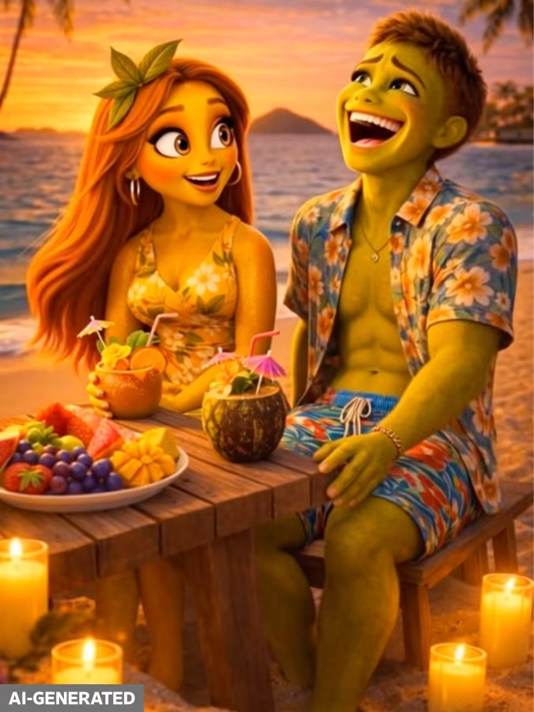

Lead woman face detail
Only the master prompt and image prompts. Generate the reference images first, then use them to create the 10-minute narrator video.
Include these images as visual references for character quality, expressive faces, body acting, and rich micro-drama framing.
Lead woman face detail

Confessional acting

Glamorous rival energy

Male body reference

Heroine close-up

Couple blocking
Paste this into the video/story generator.
Create a 10-minute vertical 9:16 Chinese Duanju-style micro drama called "The Substitute Bride Contract." Format: - First-person narration from the main character, Su Qing. - Do not rely on characters having long conversations. - The narrator carries the story; visuals show emotional reactions, proof objects, documents, and reversals. - Tone: wealthy-family melodrama, betrayal, contract marriage, hidden inheritance, public humiliation reversal. - Visual style: cinematic realistic Chinese micro drama, luxury wedding ballroom, hospital night corridor, wealthy mansion, corporate charity gala, close-up emotional acting, hard Duanju cuts, clear proof objects, shallow depth of field. Story: Su Qing is a 24-year-old night-shift nurse. Her younger brother needs an urgent transplant deposit before sunrise. Her rich father and stepmother force her to replace her runaway stepsister Su Man at a billionaire wedding. They promise to pay the surgery deposit if Su Qing wears Su Man's wedding dress for one day. At the altar, cold CEO Lu Jincheng immediately realizes Su Qing is not Su Man. He notices Su Qing's old jade pendant but still completes the marriage. Guests humiliate Su Qing as the poor substitute bride. After the wedding, Su Qing learns the surgery money was never paid. Su Qing finds an old photo linking her dead mother to the Lu family. She follows her father and stepmother and discovers their real plan: after the wedding, they want her to sign away her mother's trust shares. Attorney He reveals the truth: Su Qing's mother left a trust that activates only if Su Qing legally marries the Lu heir under her real name. The marriage gives Su Qing control of 30 percent of Su Group. Su Qing gathers evidence with a hidden camera in her jade pendant. At a charity gala, Madam Zhao tries to make Su Qing sign a public apology with a hidden transfer page underneath. Su Qing signs only one page, exposes the hidden transfer, and plays the recording on the gala LED screen. Attorney He enters with the trust file. Lu Jincheng stands beside Su Qing and reveals the covered clause always named Su Qing, not Su Man. Final cliffhanger: Su Man returns in a red dress holding an ultrasound envelope, claiming she is pregnant. Lu Jincheng calmly hands Su Qing a sealed DNA report. Su Qing opens it. The father is not Lu Jincheng. The report says: Lu Mingxuan. Cut to Lu Jincheng's uncle smiling from the second row. End with: "That was when I understood this marriage had not pulled me into one family war. It had pulled me into two." Required proof objects: 1. Su Qing's jade pendant. 2. The covered contract clause. 3. The unpaid hospital deposit notice. 4. The mother's trust file. 5. The hidden transfer page. 6. The gala LED evidence video. 7. The DNA report naming Lu Mingxuan. Editing: - Use short captions only for key turns. - Add all legal text, dates, and report names in edit, not generated inside the image. - Music: low piano for humiliation, silence on document reveals, rising strings for the trust reveal, bass hit on the DNA cliffhanger. - Loop cut: cut from the DNA report reveal back to Su Qing standing alone at the wedding altar.
Generate these images first. Use them as references for the full video.
If the image generator can keep characters consistent, use the character images as references for every scene. Add legal text overlays later in editing.